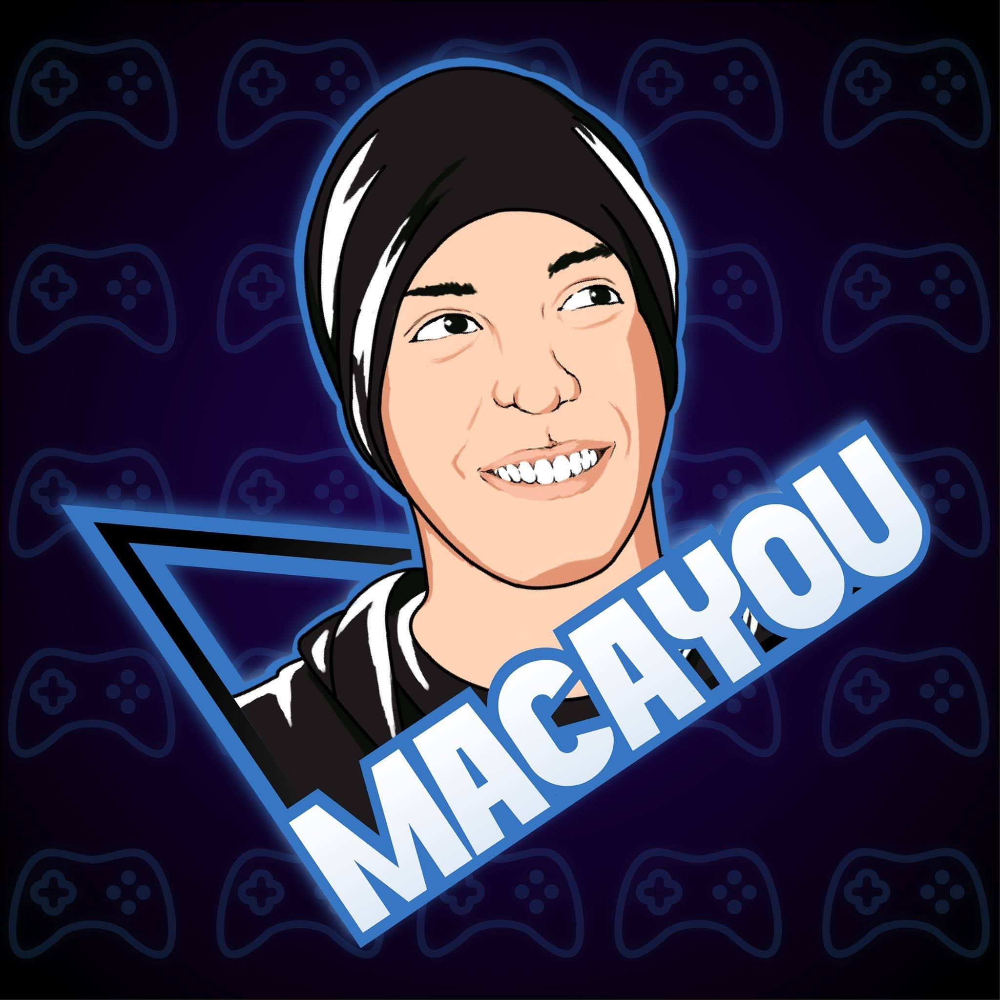

Gastón
📍 Corrientes, Argentina
29 años
🎨 Habilidades de Diseño
🎬 Películas Favoritas
🎵 Música Favorita
✨ Sobre mí
Soy diseñador UI/UX con pasión por crear experiencias digitales que conecten emocionalmente con los usuarios. Me especializo en research, prototipado y desarrollo de design systems que faciliten la vida de las personas.
Mi inspiración viene del arte, el cine y la música. Creo firmemente que el buen diseño debe ser invisible para el usuario, pero memorable en su experiencia. Siempre busco el equilibrio perfecto entre función y belleza.